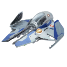

Menu Chức Năng
Trang chủ
Du lịch (R)
Bên trong ISS (V)
Bên ngoài ISS_Góc 1 (C)

Bên ngoài ISS_Góc 2 (B)
Phi hành gia (N)
Góc nhìn từ Mặt trăng (F)
Cài Đặt
Âm thanh
Tốc độ quay
Hướng Dẫn Điều Khiển
R
Chế độ du lịch
F
Khám phá Mặt Trăng
V
ISS nhìn từ bên trong
C
ISS nhìn từ bên ngoài (góc 1)
B
ISS nhìn từ bên ngoài (góc 2)
N
Phi hành gia nhìn từ ISS